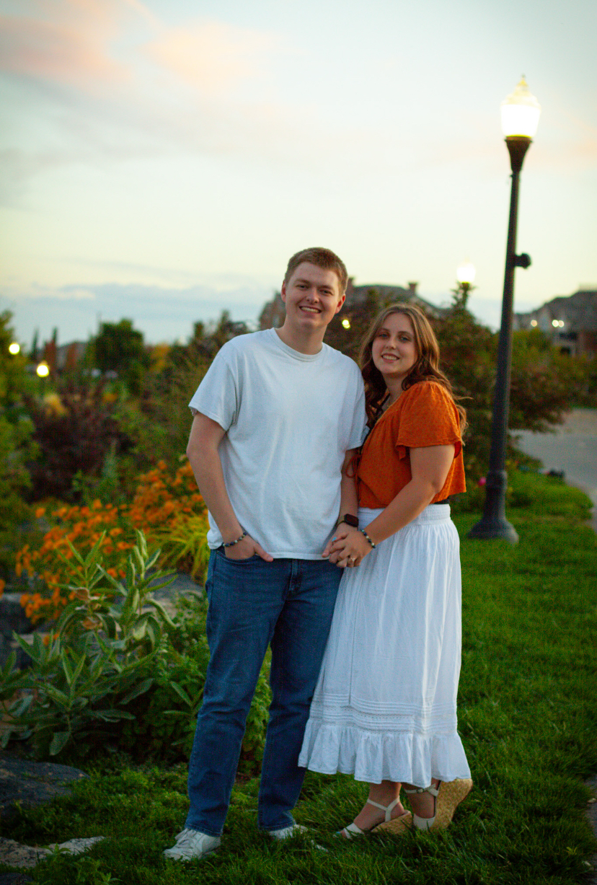

Welcome to my Portal Page
This is the portal page for my WDD 130 class. Please use the navigation above to view the different pages I have created for this class.
I'm a student at BYU-I and I have been developing my web design skills! This page demonstrates some HTML, JavaScript, and CSS. This is my first attempt at a web page and I am excited to continue to develop my skills! The image to my left is a picture of some of my other work as a computer engineer!